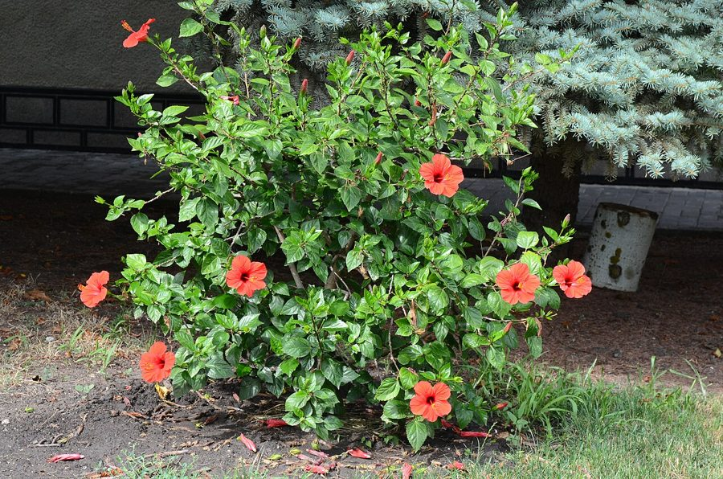

गुड़हलHibiscus
Hibiscus rosa-sinensis · Malvaceae · FLR-0305

- Scientific name वैज्ञानिक नाम
- Hibiscus rosa-sinensis L.
- Family कुल
- Malvaceae
- Hindi हिंदी
- गुड़हल
- Local names स्थानीय नाम
- gurhal, gudhal, jasum, hibiscus
- Status here यहाँ की स्थिति
- cultivated
- Movement आवागमन
- Resident, here all year
- Known from कहाँ दर्ज
- Others have published records from the wider Awadh–Purvanchal plain, none yet from Basti–Ayodhya अवध–पूर्वांचल से दूसरों के प्रकाशित अभिलेख, बस्ती–अयोध्या से अभी नहीं
- IUCN IUCN
- not evaluated
- Review समीक्षा
- audited and independently read
When to look कब देखें
Present all year. साल भर मौजूद।
Uses and possibilities उपयोग और संभावनाएँ
Drawn from the documented uses in the profile below, where each is labelled traditional, current or a research lead. All uses →
Tell it apart from इनसे अलग पहचानें
गुड़हल / Hibiscus
Hibiscus rosa-sinensis L. — Malvaceae
गुड़हल — बागों की सबसे आम झाड़ी, जिसके बड़े, रंग-बिरंगे फूल खिलते रहते हैं। फूल लाल, गुलाबी, नारंगी, पीले, सफ़ेद या दो-रंगी होते हैं। हर फूल एक दिन के लिए खिलता है, फिर झड़ जाता है। पूजा में इस्तेमाल होता है। मधुमक्खियों, तितलियों और चिड़ियों को आकर्षित करता है।
Quick Identification त्वरित पहचान
| Feature | Description |
|---|---|
| Size | Evergreen shrub 1–3 m tall, erect, well-branched |
| Leaves | Ovate to oblong, 5–10 cm long, dark green, glossy, with serrated margins; 3–5 main veins from base |
| Flowers | Large, showy, 6–10 cm diameter, with five petals; colours range from red, pink, orange, white, yellow, to bi-coloured; central column of stamens is very prominent |
| Fruit | Small, rounded, hairy capsule, 1–2 cm, containing several seeds |
| Bark | Grey-brown, smooth on young stems, becoming rough with age |
| The test | Large, five-petalled flowers with a very long, prominent stamen column in centre; leaves ovate with serrated margins |
Field tip: Hibiscus is the commonest cultivated shrub in gardens throughout eastern UP. Look for the large, colourful flowers and the shrub's upright, bushy form. Every flower lasts only one day. The plant flowers almost year-round, with peak bloom in spring.
हिंदी — कैसे पहचानें: बड़े, रंग-बिरंगे फूल, बीच में लंबे पुंकेसर। पत्तियाँ अंडे जैसी, दाँतेदार। हर दिन नए फूल।
Morphology आकारिकी
Biometrics (cultivated shrubs in gardens):
| Measurement | Range |
|---|---|
| Height | 1–3 m |
| Stem diameter | 1–3 cm |
| Leaf length | 5–10 cm |
| Leaf width | 3–6 cm |
| Flower diameter | 6–10 cm |
| Stamen column length | 3–4 cm |
Stem and branches: Erect, much-branched, green when young, becoming woody and grey-brown with age. Young branches are slightly hairy.
Leaves: Alternate, ovate to oblong, 5–10 cm long, 3–6 cm wide, dark green, glossy and smooth above, paler beneath; margins serrated; three to five prominent veins from the base; short petiole.
Flowers: Large, showy, with five petals, 6–10 cm in diameter. The colour ranges from deep red to pink, orange, white, yellow, or combinations thereof. The most distinctive feature is the central column (androgynophore) bearing numerous red or yellow stamens and the pistil, which extends well beyond the petals. Flowers are borne singly at leaf axils. Each flower lasts approximately one day.
Fruit: A rounded, hairy capsule, 1–2 cm diameter, with five cells, each containing several small seeds.
हिंदी: पत्तियाँ अंडे जैसी, गहरी हरी, दाँतेदार। फूल बड़े, रंग-बिरंगे। बीच का पुंकेसर स्तंभ बहुत लंबा, सफ़ेद, पीला, लाल।
Behaviour & Ecology व्यवहार और पारिस्थितिकी
Hibiscus is a tropical and subtropical shrub, likely native to Southeast Asia and cultivated worldwide. In eastern UP it thrives in well-drained soils and warm conditions. It is highly adaptable, tolerating poor soils and irregular water. The plant grows rapidly and responds well to pruning. The flowers are visited by bees, butterflies, moths, and flower-visiting birds such as sunbirds. The nectar is copious and the flower is an important nectar source during winter and spring.
The plant rarely escapes cultivation; it is purely an ornamental, not invasive.
हिंदी: गर्म क्षेत्रों में पनता है। खराब मिट्टी भी सहन कर लेता है। फूलों पर मधुमक्खियाँ और तितलियाँ आती हैं। बहुत सरल पौधा।
Life Cycle / Phenology जीवन चक्र
| Month / season | Event |
|---|---|
| October–May | Main flowering period; peak bloom March–April |
| June–September | Vegetative growth; fewer flowers in hot, dry summer |
| Throughout year | Some flowers present even in non-peak months |
| 1–2 years from seed | First flowering; usually propagated from cuttings |
The plant is evergreen and long-lived in cultivation, often growing for 20–30 years or more.
हिंदी: मार्च-अप्रैल में सबसे ज़्यादा फूल। गर्मी में कम फूल। बीज से या कटिंग से नए पौधे।
Associated Species / Interactions संबंधित प्रजातियाँ
- Pollinators: Asian Honey Bee, butterflies, moths, and flower-visiting birds.
- Garden companions: Planted with Yellow Bells, Crape Jasmine, and other ornamental shrubs.
Pests and Diseases कीट और रोग
- Mealybugs and scale insects on stems and leaves.
- Leaf-eating caterpillars and beetles; rarely cause serious damage.
- Powdery mildew in humid weather.
- Leaf spot fungi in very wet conditions.
Agricultural / Human Relevance कृषि प्रासंगिकता
Ornamental and cultural use (documented use):
Hibiscus is one of the most widely cultivated ornamental shrubs in Indian gardens. The flowers are highly valued for their beauty and are used in religious ceremonies, garlands, and decorations. In Hindu tradition, the flowers are offered to deities and are associated with divine beauty. The plant is sacred in some contexts.
Today. Hibiscus is grown in gardens and parks across eastern UP for its continuous, colourful flowers. It is a symbol of beauty and is universally appreciated. The plant requires minimal care and responds well to pruning.
Research direction (a lead, not a result). The genetic diversity of Hibiscus cultivars in India and the history of their introduction merit documentation.
हिंदी: पूजा में फूल चढ़ाए जाते हैं। बागों की सबसे आम झाड़ी। कोई रोग-नुकसान नहीं। हर दिन नए फूल।
Expected Locally स्थानीय रूप से अपेक्षित
Not a field record. Written from published accounts for eastern Uttar Pradesh. No confirmed local sighting yet — if you have seen it, that is what the atlas needs.
अभी तक स्थानीय पुष्टि नहीं। यह विवरण प्रकाशित स्रोतों से है, किसी अवलोकन से नहीं।
GBIF holds published records from the wider Awadh–Purvanchal plain. Hibiscus is to be expected as a cultivated plant in gardens, homesteads, parks, temples, and roadside ornamental plantings throughout Basti and Ayodhya districts. It is not wild. Every garden has at least one plant.
Distribution वितरण
Global range: Native to Southeast Asia; cultivated worldwide in tropical and subtropical regions.
In India: Widely cultivated throughout the country in gardens and parks.
In Uttar Pradesh: Common ornamental in gardens and parks.
In Basti district / eastern UP: Universal in gardens; occasional on roadsides and in public spaces.
Research Questions शोध प्रश्न
- How many colours of hibiscus flowers are grown in your village? — Walk gardens and document flower colours.
- Which insects visit the flowers most often, and at what time of day? — Observe a plant for one hour in the morning and one in the afternoon.
- Does anyone eat the flowers or make products from them? — Ask residents about uses beyond decoration.
- How long does each flower last, and how many flowers open on a plant per day? — Mark flowers and count daily blooms.
- Do the seeds from hibiscus pods germinate if planted? — Collect mature seed pods; attempt to grow seedlings.
Similar Species मिलती-जुलती प्रजातियाँ
| Species | How to tell apart | हिंदी |
|---|---|---|
| okra (Abelmoschus esculentus) | Smaller flowers (3–5 cm); used as a vegetable; leaf lobes more pronounced | भिंडी — छोटे फूल; सब्ज़ी |
| roselle (Hibiscus sabdariffa) | Flowers smaller (3–4 cm); calyces are thick, fleshy, and edible; leaves deeply lobed | लाल अमलोद — पत्तियाँ कटी; कली खाई जाती है |
| Wild hibiscus species | Various; smaller flowers; not cultivated | जंगली गुड़हल — छोटे फूल |
Field rule: A cultivated shrub with large (6–10 cm), showy, five-petalled flowers in many colours, with a very long, prominent central column of stamens, and ovate, serrated leaves, is Hibiscus.
Taxonomy & Classification वर्गीकरण
Original description. Described by Carl Linnaeus in Species Plantarum (1753), p. 694. The species epithet rosa-sinensis means "Chinese rose."
Subspecies. Monotypic — no subspecies are formally recognised, though many cultivars exist.
Family and order placement. Malvaceae (mallow family), order Malvales. The genus Hibiscus includes over 300 species.
Phylogenetic notes. Hibiscus rosa-sinensis is closely related to other ornamental Hibiscus species and to okra and roselle.
IUCN status rationale. Not evaluated. Widely cultivated; likely native to Southeast Asia.
Photo Gallery फोटो गैलरी
Photos needed आवश्यक फोटो
- [ ] Whole shrub with flowers
- [ ] Close-up of flowers in various colours
- [ ] Leaves and stem
- [ ] Seed pods
- [ ] Pollinators on flowers
No photos yet — add field photos to media/species/hibiscus/ and run node scripts/sync_photos.js.
References संदर्भ
- Linnaeus, C. (1753). Species Plantarum, vol. 2, p. 694. Laurentii Salvii, Holmiae. [original description]
- Hooker, J.D. (1872). The Flora of British India, vol. 1. L. Reeve, London.
- Duthie, J.F. (1903). Flora of the Upper Gangetic Plain. Government Printing, Calcutta.
- Kirtikar, K.R. & Basu, B.D. (1935). Indian Medicinal Plants, 2nd ed., vol. 2. Lalit Mohan Basu, Allahabad.
- Chevalier, A. (1946). Histoire de l'Hibiscus rose de Chine. Paris.
- GBIF Occurrence Data — Hibiscus rosa-sinensis, India (2026).
Source file: species/flora/shrubs/hibiscus.md